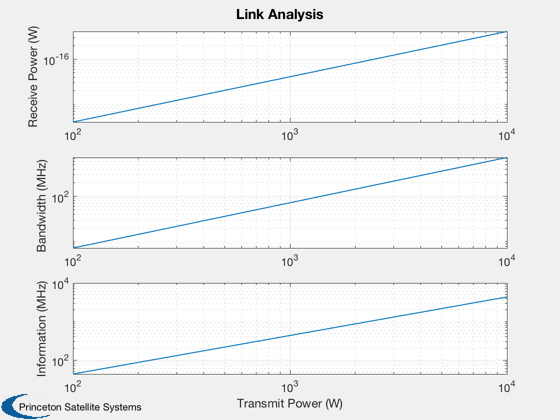

Link analysis for a Mars mission
Contents
30 GHz
fHz = 30e9;
c = 3e8;
lambda = c/fHz;
Transmit antenna
apertureDiameterTransmit = 0.57;
antennaAreaTransmit = (pi/4)*apertureDiameterTransmit^2;
apertureDiameterReceive = 4;
antennaAreaReceive = (pi/4)*apertureDiameterReceive^2;
apertureEfficiency = 0.5;
aETransmit = apertureEfficiency*antennaAreaTransmit;
aEReceive = apertureEfficiency*antennaAreaReceive;
gainTransmit = 4*pi*aETransmit/lambda^2;
gainReceive = 4*pi*aEReceive /lambda^2;
range = 2.52*149597870*1e3;
rangeLoss = (lambda/(4*pi*range))^2;
k = 1.38e-23;
lP = 1;
lGP = 1;
lA = 1;
lS = 10^(1.4/10);
t0 = 290;
f = 10^(3.5/10);
sN = 10^(18/10);
pT = logspace(2,4);
fprintf('Aperture efficiency \t %12.4f \n', apertureEfficiency);
fprintf('Required S/N \t %12.4f\n', sN );
fprintf('Transmit Antenna area \t %12.4f m^2\n', aETransmit );
fprintf('Receive Antenna area \t %12.4f m^2\n',aEReceive );
fprintf('Propagation loss \t %12.4f\n', lA );
fprintf('Ground plane loss \t %12.4f\n', lGP );
fprintf('System loss \t %12.4f\n', lS );
fprintf('Noise factor \t %12.4f\n', f );
pR = pT*gainTransmit*gainReceive*rangeLoss/(lS*lA*lGP);
pN = pR/sN;
b = pN/(k*t0*f);
c = b*log2(1+sN);
yP = {'Receive Power (W)','Bandwidth (MHz)','Information (MHz)'};
Plot2D(pT,[pR;b;c],'Transmit Power (W)',yP,'Link Analysis','log')
Aperture efficiency 0.5000
Required S/N 63.0957
Transmit Antenna area 0.1276 m^2
Receive Antenna area 6.2832 m^2
Propagation loss 1.0000
Ground plane loss 1.0000
System loss 1.3804
Noise factor 2.2387
